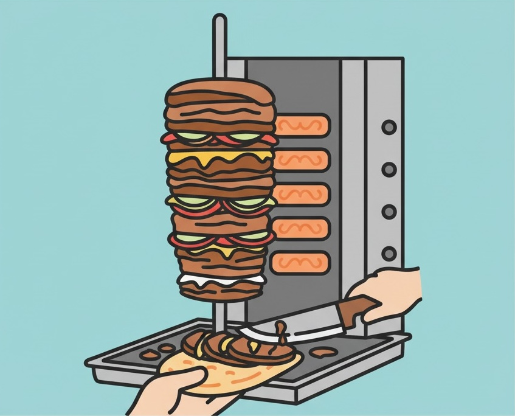

#01 JavaScript - JavaScript入門・jQuery
今回のゴール
- JavaScriptの使い方を理解する
- 変数の宣言・計算
- 条件分岐
- Math オブジェクト
- DOM操作の基本
- jQueryの使い方を理解する
zipファイルをダウンロード後に展開し、VSCodeで開いてください！
- 講義内資料: js01.zip
- 課題ファイル: js01-janken.zip
JavaScriptとは何か？
JavaScriptとは
- 静的なHTMLページに動きやインタラクションを加えるプログラミング言語
JavaScriptの最大の特徴は、ブラウザ上で直接動作すること！
ブラウザには JavaScriptエンジン という「JSを実行する機能」が内蔵されているんです
JavaScriptでできること
- ボタンをクリックしたときの処理
- フォームの入力チェック
- アニメーション効果
- データの取得と表示
- ゲームやアプリケーションの作成
JavaScript入門
JavaScriptの記述場所パターン
1. HTML直接パターン（インライン）
- HTMLファイル内に直接JavaScriptを記述
<!DOCTYPE html>
<html lang="ja">
<head>
<meta charset="UTF-8">
<title>JavaScript練習</title>
</head>
<body>
<h1>JavaScriptテスト</h1>
<!-- HTML内に直接JavaScriptを記述 -->
<script>
alert("Hello World!");
console.log("コンソールに表示されました");
</script>
</body>
</html>
2. 外部ファイル読み込みパターン
- JavaScriptを別ファイル（.jsファイル）として作成
- HTMLから読み込む
js/script.js
// script.jsファイルの内容
alert("Hello World!");
console.log("外部ファイルから読み込まれました");
index.html
<!DOCTYPE html>
<html lang="ja">
<head>
<meta charset="UTF-8">
<title>JavaScript練習</title>
</head>
<body>
<h1>JavaScriptテスト</h1>
<!-- 外部のJavaScriptファイルを読み込み -->
<script src="./js/script.js"></script>
</body>
</html>
この教材の演習では、わかりやすさを重視してHTML直接パターンを使用します。1つのHTMLファイルで完結するため、初心者の方でも混乱せずに学習を進められます。
実際の開発現場では外部ファイル読み込みパターンがよく使われますが、まずは基本をしっかりと身につけましょう！
JavaScriptはHTMLに対する指示（DOM操作）を含むことが多いため、読み込み場所に注意が必要です。
推奨される配置方法：
</body>の直前に配置するdefer属性を使用 （<script defer src="script.js"></script>）し、HTML解析完了後に実行させる
これにより、「要素が見つからない」といったエラーを防げます！
まずは文字を表示してみよう
プログラミングの第一歩は、文字を表示することから始まります。JavaScriptには2つの基本的な表示方法があります。
// ポップアップで表示
alert("Hello World!");
// 開発者ツールのコンソールに表示
console.log("Hello World!");
alert()はユーザーの操作を止めてしまうため、開発中はconsole.log()を使うのが一般的です。コンソールは開発者だけが見る場所なので、デバッグ情報を自由に出力できます。
コメントの書き方
- コードに説明を加えたいときに利用する
// 1行のコメント
/*
複数行に渡って
コメントを書く
*/
ショートカットキー
- Windows:
Ctrl+/ - Mac:
Cmd+/
補足 セミコロン( ; ) の役割
- 式の終わりを示すもの
- JavaScriptの場合はセミコロンがついていなくてもプログラムは動作するのでどちらでもOK
// セミコロンありの例
console.log("Hello World!");
let name = "田中";
// セミコロンなしでも動作する
console.log("Hello World!")
let name = "田中"
補足 ダブルクォート ( " ) と シングルクォート ( ' ) の違い
- プログラムでは、文字や文字列（テキスト）をコンピューターに「これは文字だよ」と伝えるために、クォート（引用符）で囲む
- JSでは
"(ダブルクォート) と'(シングルクォート) のどちらを使ってもOK - ただし、前後の記号は必ず一致させること！
- バッククォート（`）で囲ってもOK
// OK: ダブルクォートで囲む
"hello world!"
// OK: シングルクォートで囲む
'hello world!'
// OK: バッククォートで囲む（テンプレートリテラル）
`hello world!`
// NG: 最初が ", 最後が ' と一致していない
"hello world!'
前後の記号が一致していないため、エラーが発生
JavaScriptでは " と ' を区別しませんが、他の言語では挙動が変わる場合があります！
- PHP:
"のみ変数展開を実施する - C言語:
'は文字、"は文字列に使用する
変数と定数
変数とは - データをしまう『箱』
- プログラムで使うデータを一時的にしまっておくための箱のようなもの
- 箱に名前を付けておくことで、中身を自由に取り出したり、入れ替えたりできる
変数は「名前のついた箱」のようなもの。データを保存して、後で取り出すことができる
変数 let
基本的な使い方
// 変数の宣言と代入
let userName = "田中太郎";
let userAge = 25;
// 変数の中身を表示
console.log(userName); // "田中太郎"
console.log(userAge); // 25
// 変数の中身を変更（再代入）
userAge = 26;
console.log(userAge); // 26
英語の使役動詞「let」（〜させる）が由来です。 Let userName be "田中太郎"（userName を 田中太郎 とする） ってことですね！
var という記述を見かけたら...
JavaScriptにはvarという古い変数宣言もありますが、現在はletを使うのが推奨されています。letの方がスコープ（変数が使える範囲）が明確で、バグを防ぎやすいからです。詳しくは ES6文法を調べてみましょう！
変数に入れられるもの
変数には様々な種類のデータを入れることができます。
// 文字列（String）
let message = "こんにちは";
// 数値（Number）
let price = 1500;
// 真偽値（Boolean）
let isStudent = true;
// 配列（Array）
let fruits = ["りんご", "バナナ", "オレンジ"];
// オブジェクト（Object）
let user = {
name: "太郎",
age: 25
};
定数 const
基本的な使い方
// 定数の宣言
const TAX_RATE = 10;
// 定数は再代入できない
// TAX_RATE = 5; // エラーが発生！
- const: 値が変わらないもの（税率、サイト名など）
- let: 値が変わる可能性があるもの（カウンター、ユーザー入力など）
基本的にはconstを使い、再代入が必要な場合のみletを使うのがベストプラクティスです。
補足 配列やオブジェクトでのconstの動作
- 配列やオブジェクトを
constで宣言した場合、参照は変更できませんが、中身は変更可能
const fruits = ["りんご", "バナナ"];
// 中身の変更は可能
fruits.push("オレンジ");
console.log(fruits); // ["りんご", "バナナ", "オレンジ"]
// 参照の変更は不可能
// fruits = ["ぶどう"]; // エラー！
変数名のつけ方
- 変数名は英語で、内容が分かりやすい名前をつけよう！
// 良い例
const userName = "太郎";
const totalPrice = 1500;
const isVisible = true;
// 悪い例
const x = "太郎"; // 何の値か不明
const price = 1500; // 総額なのか単価なのか不明
const flag = true; // 何のフラグか不明
JavaScriptでは、複数単語の変数名を書くときに「キャメルケース」を使います。
（例：userName, totalPrice, isLoggedIn）
慣例なので必須ではありませんが、多くの開発者が使っているので合わせておきましょう！
| 名前 | 記述方法 | イメージ | 主な言語 | 備考 |
|---|---|---|---|---|
| キャメルケース | camelCase | Java, JavaScript | JSのクラス名はパスカルケース | |
| パスカルケース | PascalCase | - | Pascal | 別名: アッパーキャメルケース |
| スネークケース | snake_case | Python | Python（大蛇）だからスネークケース | |
| ケバブケース | kebab-case |  | HTML, CSS | Lispケースと呼ばれることも JSでは使えない |
計算
数値の計算
- 数学と同じような記号を使って計算ができる
// ---------------------
// 数値の計算
// ---------------------
let a = 5;
let b = 3;
console.log(a + b); // 足し算: 8
console.log(a - b); // 引き算: 2
console.log(a * b); // 掛け算: 15
console.log(a / b); // 割り算: 1.6666666666666667
console.log(a % b); // 余り: 2
余り（%）は意外と便利な演算子！ 例えばこんな使い方をします
- 偶数・奇数の判定（
数値 % 2が0なら偶数、1なら奇数） - 時間計算（24時間を超えたら0時に戻るなど）
文字列の結合
文字と文字をくっつけることを「文字列の結合」と言います。JavaScriptでは + を使って文字を結合できます。
// ---------------------
// 文字列の結合
// ---------------------
let sei = "田中";
let mei = "太郎";
console.log(sei + mei); // "田中太郎"
// スペースを入れたい場合
console.log(sei + " " + mei); // "田中 太郎"
// 挨拶文を作る
let aisatsu = "こんにちは、" + sei + mei + "さん！";
console.log(aisatsu); // "こんにちは、田中太郎さん！"
補足 テンプレートリテラル（バッククォート）での文字列結合
バッククォート（`）を使うと、より読みやすく文字列を結合できます：
let sei = "田中";
let mei = "太郎";
let age = 25;
// 従来の方法
let message1 = "こんにちは、" + sei + mei + "さん（" + age + "歳）です。";
// テンプレートリテラル
let message2 = `こんにちは、${sei}${mei}さん（${age}歳）です。`;
console.log(message1); // "こんにちは、田中太郎さん（25歳）です。"
console.log(message2); // "こんにちは、田中太郎さん（25歳）です。"
${} の中に変数や式を書くことで、文字列の中に値を埋め込むことができます。
制御構文 - 条件分岐
制御構文とは
- プログラムの実行順序を制御する特別な構文のこと
- 条件によって処理を分岐させたり、同じ処理を繰り返すことが可能
条件分岐系
if条件によって処理を分岐switch複数の条件を効率的に分岐繰り返し系
for指定回数の繰り返しwhile条件を満たす間の繰り返しdo...while最低1回は実行する繰り返しif文から学んでいきましょう！
条件分岐とは
- プログラムに「もし〜なら」という判断をさせる
例: 年齢によって成人か未成年かを判断する場合
if文の基本文法
if (条件式) {
// 処理1
} else if (条件式) {
// 処理2
} else {
// 処理3
}
補足 波括弧の後にはセミコロンが不要！
JavaScriptでは、if文の波括弧{}の後にセミコロン;はつけません。
なぜセミコロンが不要なのか？
JavaScriptには「式（Expression）」と「文（Statement）」という2つの概念があります：
- 式（Expression）: 値を生成するもの → セミコロンが必要
- 文（Statement）: 処理のステップを表すもの → セミコロンは不要
覚え方のコツ
- 波括弧
{}で終わる構文（if文、for文、関数定義など）→ セミコロン不要 - それ以外（変数宣言、関数呼び出しなど）→ セミコロンが必要
if文（条件が真の時だけ実行）
採点システムを作成したいと想定してif文を書いてみましょう！
まずは80点以上だったら合格である、という条件で分岐させてみましょう。
const score = 85;
if (score >= 80) {
console.log("合格です！");
}
// 条件が真（score が 80以上）の場合のみ「合格です！」が表示される
// 条件が偽の場合は何も表示されない
80点未満の場合は何も表示されないことを確認しましょう！
数学記号で言うところの ≧ です。 ≧ は特殊文字のため、横並びにして >= と書きます。
if-else文（条件によって2つの処理を分岐）
さっきは不合格の場合は何も表示されませんでした。そこで、不合格の場合も「不合格」と表示してみましょう！
const score = 85;
if (score >= 80) {
console.log("合格です！");
} else {
console.log("不合格です");
}
// score が 80以上なら「合格です！」
// そうでなければ「不合格です」が表示される
if-else if-else文（複数の条件を順番にチェック）
さらに条件を追加して、60点以上80点未満だったら「合格までもう少し！」、という条件も追加してみましょう！
const score = 85;
if (score >= 80) {
console.log("合格です！");
} else if (score >= 60) {
console.log("合格までもう少し！");
} else {
console.log("不合格です");
}
条件は上から順番にチェックされます。最初に真になった条件の処理が実行され、その後の条件はチェックされません。
if文の活用例
例: ユーザーの年齢で表示を変える
// ユーザーの年齢で表示を変える
const userAge = 20;
if (userAge >= 20) {
console.log("成人です");
console.log("すべてのコンテンツが利用できます");
} else if (userAge >= 13) {
console.log("ティーンエイジャーです");
console.log("一部のコンテンツが制限されます");
} else {
console.log("子供です");
console.log("キッズ向けコンテンツのみ利用できます");
}
例: 気温による服装提案
// 気温による服装提案
const temperature = 15;
if (temperature >= 25) {
console.log("暑いです");
console.log("半袖がおすすめです");
} else if (temperature >= 15) {
console.log("過ごしやすい気温です");
console.log("長袖がおすすめです");
} else {
console.log("寒いです");
console.log("コートを着ましょう");
}
比較演算子
条件分岐で使う比較の記号を覚えましょう。
const score = 100;
// 等しい
score == 100; // true
score != 100; // false（等しくない） ≠
// 大小比較
score < 100; // false
score <= 100; // true（以下） ≦
score > 100; // false
score >= 100; // true（以上） ≧
// 厳密な比較
score === 100; // true（型も含めて等しい）
score !== 100; // false（型も含めて等しくない） ≠
100 == "100" // true（値が同じ）
100 === "100" // false（型が違う）
===は型も含めて比較するため、より安全です。基本的には===を使いましょう。
複数条件の組み合わせ
const age = 25;
const hasLicense = true;
// AND条件（両方満たす）
if (age >= 18 && hasLicense) {
console.log("運転できます");
}
// OR条件（どちらか一方を満たす）
const day = "土曜日";
if (day === "土曜日" || day === "日曜日") {
console.log("週末です");
}
Mathオブジェクト
数学的な計算を行う
JavaScriptには、便利な機能をまとめた組み込みオブジェクトが用意されています。
そのひとつが Math で、数学的な計算に役立つ機能がまとまっています。
「数学用の便利ツール箱」 と考えるとイメージしやすいですね！
const num = 4.7;
// 切り捨て
console.log(Math.floor(num)); // 4
// 切り上げ
console.log(Math.ceil(num)); // 5
// 四捨五入
console.log(Math.round(num)); // 5
// ランダムな数（0以上1未満）
console.log(Math.random()); // 0.123456...（毎回違う値）
演習 0〜4の整数を生成しよう
課題: Math.random()とMath.floor()を使って、0, 1, 2, 3, 4のいずれかの整数をランダムに生成してconsole.log()で表示してください。
解答例
// 0, 1, 2, 3, 4 のいずれかの整数を生成
const randomNum = Math.floor(Math.random() * 5);
console.log(randomNum);
Math.random()→ 0以上1未満の小数（例: 0.567）* 5→ 0以上5未満の小数（例: 2.835）Math.floor()→ 切り捨てて0〜4の整数（例: 2）
この0〜4の数字を使って、おみくじアプリを作ってみましょう！
// おみくじアプリ概要 ver.1(console.log版) ---------------------------
// - おみくじの結果がconsoleに表示される
// - おみくじの結果は大吉、中吉、小吉、末吉、凶のいずれか
// - おみくじの結果はランダムに表示される
// --------------------------------------------------------------
DOM操作入門
DOMとは何か？
- Document Object Model の略語
- HTMLの要素をJavaScriptから操作するための仕組み
// JavaScriptの世界ではHTMLがこのように見えている
document
└── html
├── head
│ ├── title
│ ├── meta
│ └── script
└── body
├── h1 (id="title")
├── p (class="text")
├── div (class="container")
│ ├── button (id="btn1")
│ └── span (class="message")
└── footer
よく使うDOM操作
// 要素を取得
const element = document.querySelector('.my-class');
const allElements = document.querySelectorAll('.item');
// 要素の中身を変更
element.textContent = "新しいテキスト";
element.innerHTML = "<strong>太字のテキスト</strong>";
// スタイルを変更
element.style.color = "red";
element.style.fontSize = "20px";
// クラスを操作
element.classList.add('active');
element.classList.remove('hidden');
element.classList.toggle('selected');
イベントを設定する
// ボタンをクリックしたときの処理
const button = document.querySelector('#myButton');
button.addEventListener('click', function() {
console.log('ボタンがクリックされました！');
});
DOM操作のコードは、HTMLの要素が読み込まれた後に実行する必要があります。<script>タグを</body>の直前に置くか、DOMContentLoadedイベントを使いましょう。
演習検証ツールを使ってサイトをハックしてみよう！
検証ツールを使うと、今見ているページに対して自分で書いたJavaScriptを直接実行できちゃいます！
-
検証ツールの「Console」タブを開く
デベロッパーツール内のConsoleタブをクリック -
上記コードをコピー&ペースト
JavaScriptコードをコンソールに貼り付け -
Enterキーで実行！
// ページのタイトルを変更
document.title = "タイトルを変更！";
// 背景色を変更
document.body.style.backgroundColor = "lightblue";
// クリックした要素が消える機能
document.body.addEventListener('click', function(e) {
e.target.style.display = 'none';
});
リロードすると上記の変更が元に戻ります！JavaScriptがブラウザ上で実行される様子を楽しんでみよう♪
jQuery入門
jQueryとは
- DOM操作を簡単に書けるようにしたJavaScriptライブラリ
- アニメーションやイベント処理も簡単に書くことができる
document.querySelector('.box').style.display = 'none';
長くて覚えにくい...
$('.box').hide();
短くて直感的！
jQueryは成熟期を迎えている まだまだ現役 の技術！DOM操作の基本を理解するのに最適なツールです
jQueryの読み込み方法
1. CDN
- インターネット経由でjQueryを読み込む方法
<!DOCTYPE html>
<html lang="ja">
<head>
<meta charset="UTF-8">
<title>jQuery練習</title>
<!-- jQueryをCDNで読み込み -->
<script src="https://code.jquery.com/jquery-3.7.1.min.js"></script>
</head>
<body>
<h1>jQueryテスト</h1>
<button id="myButton">クリックしてね</button>
<script>
// jQueryが使用可能
$('#myButton').click(function() {
alert('jQueryが動いています！');
});
</script>
</body>
</html>
2. ダウンロードして読み込み
- jQueryファイルをダウンロードして、プロジェクトフォルダに保存する方法
フォルダ構成例：
project/
├── index.html
└── js/
└── jquery-3.7.1.min.js
index.html
<!DOCTYPE html>
<html lang="ja">
<head>
<meta charset="UTF-8">
<title>jQuery練習</title>
<!-- ローカルのjQueryファイルを読み込み -->
<script src="./js/jquery-3.7.1.min.js"></script>
</head>
<body>
<h1>jQueryテスト</h1>
<button id="myButton">クリックしてね</button>
<script>
// jQueryが使用可能
$('#myButton').click(function() {
alert('jQueryが動いています！');
});
</script>
</body>
</html>
- CDN: 簡単で最新版を利用可能。インターネット接続が必要
- ダウンロード: オフライン環境でも動作。ファイル管理が必要
はじめはCDNがおすすめです！
パターン１：「何を、どうする」
- 「何を（セレクタ）、どうする（メソッド）」で整理することがポイント
$()$('#myId').hide()$('#myId').hide();セレクターの詳細
jQueryのセレクターは、CSSセレクターと同じ書き方
#id→ ID.class→ クラスtag→ タグ名[attribute]→ 属性
メソッドチェーン
- メソッドを連続して書くことも可能
$('.box')
.fadeIn()
.addClass('active')
.text('完了！');
パターン２：「何を、いつ、どうする」
- イベント処理は「何を（セレクタ）、いつ（イベント）、どうする（メソッド）」の3要素で構成される
$()$('button')clickalert()$('button').click(function() {
alert('押された！')
});jQueryの使い方例
要素の取得と操作
// IDで要素を取得
$('#myId')
// クラスで要素を取得
$('.myClass')
// 要素の中身を変更（HTMLタグ付き）
$('#title').html('<strong>新しいタイトル</strong>');
$('#title').html('<img src="./img/title.png" alt="タイトル">');
// 要素の中身を変更（テキストのみ）
$('#message').text('こんにちは');
アニメーション効果
// フェードイン・フェードアウト
$('.box').fadeIn();
$('.box').fadeOut();
// スライド
$('.panel').slideDown();
$('.panel').slideUp();
// 表示・非表示
$('.element').show();
$('.element').hide();
スタイルの変更
// CSSスタイルを設定
$('.box').css('background-color', 'red');
$('.box').css('width', '200px');
// 複数のスタイルを一度に設定
$('.box').css({
'background-color': 'blue',
'width': '300px',
'height': '100px'
});
// スタイルの値を取得
const color = $('.box').css('background-color');
属性とフォーム操作
// 属性を設定・取得
$('img').attr('src', 'new-image.jpg'); // 画像を差し替え
$('a').attr('href', 'https://example.com');
const imageSrc = $('img').attr('src'); // 属性値を取得
// フォームの値を設定・取得
$('#name').val('田中太郎'); // input要素に値を設定
const userName = $('#name').val(); // input要素の値を取得
// チェックボックスの操作
$('#checkbox').prop('checked', true); // チェックを入れる
const isChecked = $('#checkbox').prop('checked'); // チェック状態を取得
イベント処理
// クリックイベント
$('#button').on('click', function() {
console.log('ボタンがクリックされました');
$('.result').text('クリックされました！');
});
// マウスオーバー
$('.card').on('mouseenter', function() {
$(this).addClass('hover');
});
$('.card').on('mouseleave', function() {
$(this).removeClass('hover');
});
// フォーム送信時の処理
$('#form').on('submit', function(e) {
e.preventDefault(); // デフォルトの送信を停止
const inputValue = $('#input').val();
alert('入力値: ' + inputValue);
});
よく使うメソッド
テキスト・HTML操作
// テキストを取得・設定
$('#title').text(); // テキストを取得
$('#title').text('新しいタイトル'); // テキストを設定
// HTMLを取得・設定
$('#content').html(); // HTML内容を取得
$('#content').html('<p>新しい内容</p>'); // HTML内容を設定
// 内容を追加
$('#content').append('<p>内容を追加</p>'); // 内容を追加
属性操作
// 属性を取得・設定
$('img').attr('src'); // src属性を取得
$('img').attr('src', 'new.jpg'); // src属性を設定
// 複数の属性を一度に設定
$('img').attr({
'src': 'image.jpg',
'alt': '画像の説明'
});
CSS・スタイル操作
// CSSプロパティを取得・設定
$('.box').css('color'); // 色を取得
$('.box').css('color', 'red'); // 色を設定
// 複数のCSSプロパティを一度に設定
$('.box').css({
'color': 'blue',
'font-size': '20px',
'background-color': 'yellow'
});
クラス操作
// クラスを追加・削除・切り替え
$('.item').addClass('active'); // クラスを追加
$('.item').removeClass('active'); // クラスを削除
$('.item').toggleClass('active'); // クラスを切り替え
$('.item').hasClass('active'); // クラスがあるかチェック
表示・非表示
// 要素の表示・非表示
$('.popup').show(); // 表示
$('.popup').hide(); // 非表示
$('.popup').toggle(); // 表示・非表示を切り替え
// アニメーション付きで表示・非表示
$('.popup').fadeIn(); // フェードイン
$('.popup').fadeOut(); // フェードアウト
$('.popup').slideDown(); // スライドダウン
$('.popup').slideUp(); // スライドアップ
イベント処理
// クリックイベント
$('#button').click(function() {
alert('ボタンがクリックされました！');
});
// その他のイベント
$('#input').focus(function() {
console.log('入力欄にフォーカスしました');
});
$('#input').blur(function() {
console.log('入力欄からフォーカスが外れました');
});
フォーム操作
// 入力値を取得・設定
$('#name').val(); // 入力値を取得
$('#name').val('山田太郎'); // 入力値を設定
// チェックボックス・ラジオボタン
$('#checkbox').prop('checked', true); // チェックを付ける
$('#checkbox').prop('checked', false); // チェックを外す
ここで紹介したのは、jQueryメソッドのほんの一部です。実際にはもっとたくさんの便利なメソッドが用意されています。どんどん使って試してみましょう！公式ドキュメントや検索で新しいメソッドを発見するのも楽しいですよ♪
エラー対応
エラーの声を聞こう！トラブルシューティング
プログラミングでエラーは日常茶飯事。大切なのはエラーが何を教えてくれているかを理解することです！
赤い波線: 文法エラーやタイポ / 黄色い波線: 改善提案 / 電球マーク: 修正案
Ctrl + S でファイルを保存
F12 でデベロッパーツールを開く → Consoleタブでエラーの行番号と原因を確認
期待した通りに動いていない場合は、コードのロジックを見直そう
よくあるエラー
原因: 文法エラー（括弧の閉じ忘れ、セミコロン忘れなど） 対処: エラーが示す行番号の前後を確認
原因: 宣言していない変数を使用 対処: 変数名のスペルミス、宣言忘れを確認
原因: 型が合わない操作（nullのプロパティにアクセスなど） 対処: 変数の中身をconsole.logで確認